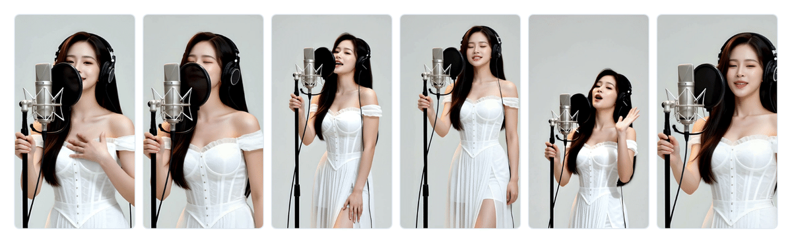
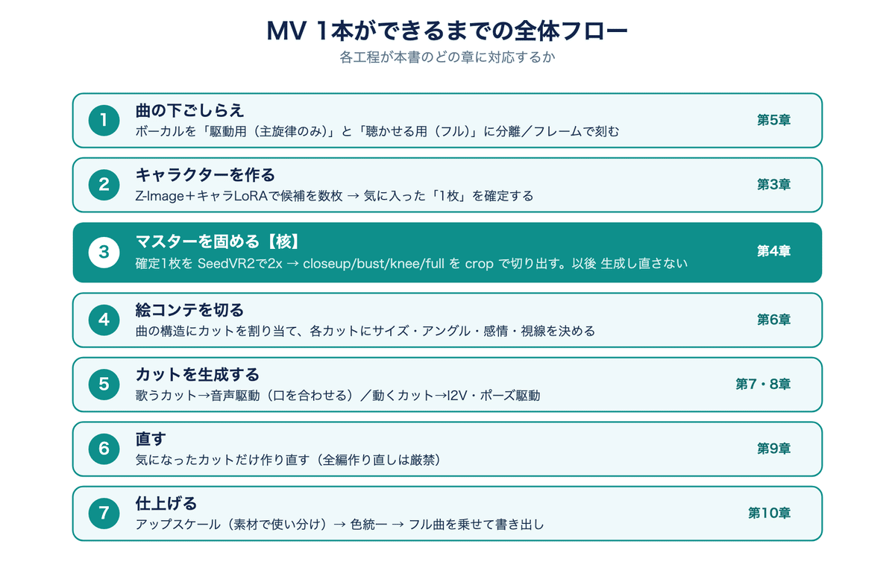

made_linlin｜RTX 5090 本機端 AI MV 全流程：用單張 Master 固定角色一致性
為什麼保存
這篇 note 值得收入 AI 學習雷達，因為它不是單純展示「AI 影片很漂亮」，而是把一支約 3 分鐘 full chorus AI MV 的本機端製作流程拆成可教、可檢查的工程地圖。
作者 made_linlin 的主張很明確：不用雲端月租服務，只靠自宅 RTX 5090 單 GPU，也能做出同一角色從頭到尾臉、體型、服裝不崩的 MV；但關鍵不是一直抽更好的圖，而是從流程上避免角色漂移。
作者也在文首標示：作例與截圖都是 AI 生成，處理的是架空成人角色，不模仿真實人物。這一點適合放進課程裡當作 AI 影像倫理與肖像風險的基本範例。
note 文章重點
原文標題為「RTX 5090ローカルで、キャラが崩れないフルコーラスAI MVを1本作った全工程」，發布於 2026 年 8 月 3 日 09:52。
作者希望達成的成品條件：
- 同一角色從歌曲開頭到結尾，臉、體型、服裝保持一致。
- 可依歌詞做歌唱 lip-sync；是否使用取決於歌曲與演出。
- 不只是單一固定鏡頭，而是包含遠景、近景、胸像、全身等多 cut。
- 720p～1080p native，並盡量降低塑膠感皮膚、不自然動作等 AI 味。

完成範例
文章嵌入的 YouTube 範例是：
- 影片：`約束 - MV STUDIO｜Yakusoku (Short Film Music Video)`
- 頻道：MVSTUDIO_by_linlin
- URL：https://www.youtube.com/watch?v=R0uR2UpWyK4
作者說明，這支約 3 分鐘、夏祭り舞台的 MV 是「本機環境完成 3 分鐘 MV 後會到達什麼程度」的例子，但不是逐字照本文流程製作；不同作品會選不同手法。
為什麼不用雲端服務
原文比較 Freebeat、Neural Frames 這類把歌曲丟進去就能生成 lip-sync MV 的雲端服務，但作者選擇本機端有四個理由：
- 成本：雲端通常是月費加生成量計費；本機主要是電費與硬體折舊。
- 自有角色：不是使用服務預設 avatar，而是能用自己訓練/設定的固有角色當主角。
- 資料留在手邊：歌曲、角色、素材不送到外部伺服器。
- 表現自由度：可以逐 cut 設計演出，而不是只接受一鍵結果。
作者也補上反向判斷：如果只做一次、角色無所謂、想快速完成，雲端服務反而更合理。本機端適合「反覆製作自己的作品」的人。
7 步全流程

流程圖將一支 MV 拆成 7 步：
- 曲子下準備：把 vocal 分成「lip-sync 驅動用主旋律」與「最後聆聽用 full mix」，並用 frame 而非秒數建立時間地圖。
- 角色生成：用 Z-Image 系與角色 LoRA 產出幾張候選，選定最喜歡的一張。
- 固定 master：把選定圖高解析化，從同一張 master crop 出 closeup / bust / knee / full；之後所有 cut 都從這些素材出發，不再重新抽臉。
- 分鏡：依 intro / A 段 / 副歌分配 cut，設定每個 cut 的角色、景別、角度、表情、視線。
- 生成 cut：歌唱 cut 用音聲驅動 S2V 對口型，動作 cut 用 I2V 或姿勢驅動；長 cut 要用固定大小視窗滑動處理，避免 VRAM 爆掉。
- 局部修正：只重做有問題的 cut，不要因為一段不滿意就全片重生。
- 最終仕上げ：依素材類型選擇 upscale 工具、統一色彩，再疊上 full mix 輸出。
核心洞察：一致性不是重抽，而是不要重抽
這篇最有價值的一句話是：一貫性不是靠「再生成」取得。
同一個 prompt 每次生成都會微妙不同；五個 cut 看起來都像同一角色，但接在一起播放時，人腦會立刻看出是五個相似但不同的人。作者的解法是：
- 先選定一張最好的角色圖。
- 把它 2 倍高解析化。
- 從同一張圖裁出不同景別。
- 後續所有 cut 都從同一張 master 派生。
- 想要別的角度，也優先從同一張圖與攝影描述處理，而不是重新抽角色。
這其實很適合轉成課程示範：用「生成模型」做創作時，真正的穩定性常常不是靠模型更大，而是靠素材鎖定、版本控制、局部修正與剪輯工程。
效能與時間估計
原文估計，在 RTX 5090 上，約 9 秒歌唱 cut 生成時間約 8 分鐘。3 分鐘 MV 若只生成 10～14 個 unique cut，生成本身約 1.5～2 小時；但實際還要加上設計、確認、修正、剪輯。
作者認為熟練後「一天一支」是可行的，但第一支通常要花數天學流程。這個估計應視模型、解析度、workflow、VRAM、硬碟 I/O、upscale 工具與人工修正標準而變動。
查核與脈絡
ComfyUI 官方 GitHub 可確認其定位為 modular diffusion model GUI / API / backend，使用 graph / nodes interface，適合作為本機 AI 影像與影片工作流的底層環境之一。
YouTube oEmbed 確認嵌入影片標題為「約束 - MV STUDIO｜Yakusoku (Short Film Music Video)」，作者為 MVSTUDIO_by_linlin。
文章中的「Z-Image 系」「S2V 系」屬作者流程分類用語；本次未由 note 直接定位到單一官方 repo 或固定版本，因此本文不擴寫成特定模型推薦。
對欒帥的可用改寫
- AI 影像課：把「同一角色不崩」設計成一堂課，對比重抽每個 cut 與單張 master 派生的差異。
- ComfyUI 工作坊：讓學生不只學節點，而是學完整 MV pipeline：音訊準備、角色素材、分鏡、生成、修正、輸出。
- 本機 vs 雲端討論：用這篇拆成本機端的成本、資料治理、自由度與學習曲線。
- 研究/創作倫理：強調只用架空成人角色、不模仿真人、避免未授權聲音/肖像。
- 課程專題：讓學員用 30 秒片段先練習，不直接挑戰 3 分鐘 full chorus，降低失敗率。
風險與限制
- RTX 5090 是高階硬體；不能直接推論一般筆電、低 VRAM GPU 或雲端免費 GPU 可達同樣速度。
- 角色一致性仍可能在手部、服裝細節、髮絲、背景連續性、口型與表情上出問題，需要人工審稿。
- 若使用 lip-sync，需確認聲音、歌曲、角色、字幕與素材授權；商業發布還要處理音樂版權與 AI 生成標示。
- 作者文末導向付費教材；本文只保存免費公開文章與 metadata，不擷取付費內容。
- AI 生成 MV 若涉及類真人外貌、聲音或偶像風格，需避免肖像權、聲音權、深偽與未授權模仿風險。
來源
- note 原文：<https://note.com/made_linlin/n/n73680a56988f>
- YouTube 範例：<https://www.youtube.com/watch?v=R0uR2UpWyK4>
- 付費教材 metadata：<https://note.com/made_linlin/n/n9702c577133b>
- ComfyUI GitHub：<https://github.com/Comfy-Org/ComfyUI>